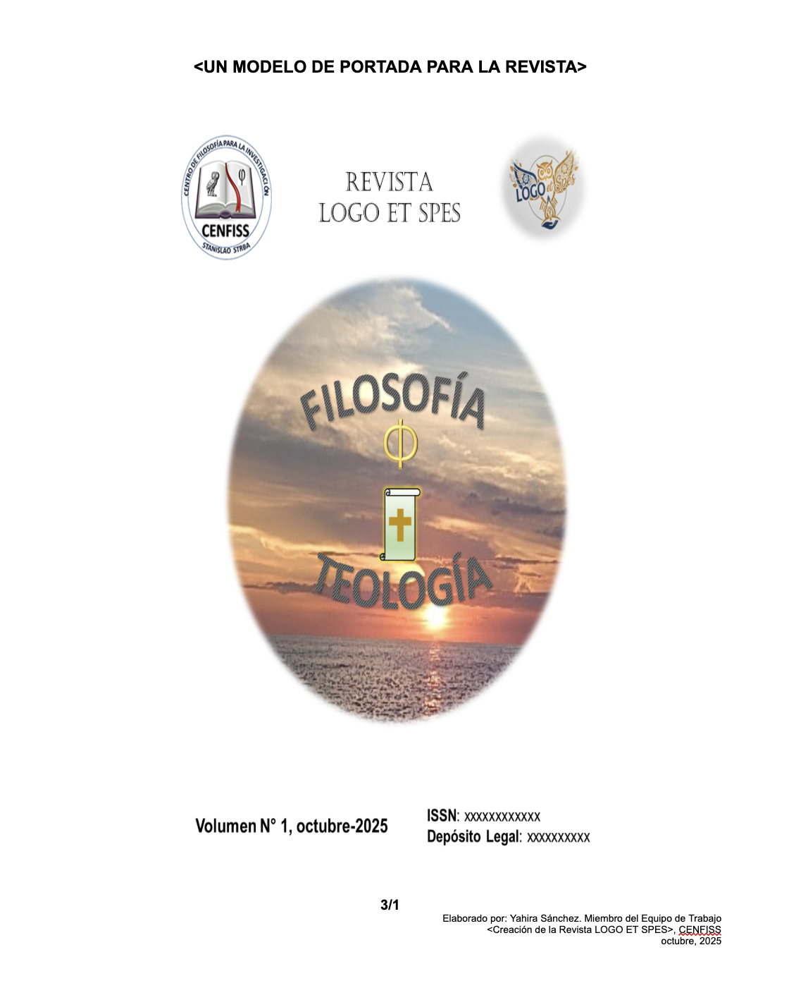

Vol. 12 Nº 2
Filosofía Contemporánea: Nuevas Perspectivas
Este número presenta una selección de artículos que abordan temas fundamentales de la filosofía contemporánea, desde la metafísica hasta la ética aplicada.
6 artículos •
4 secciones •
116 páginas